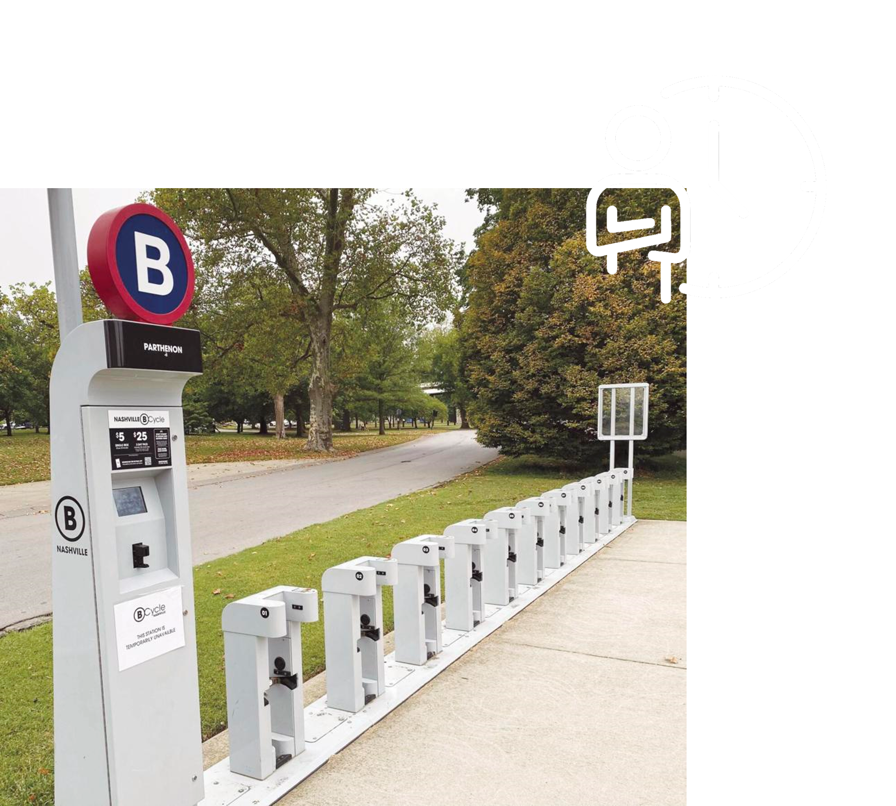
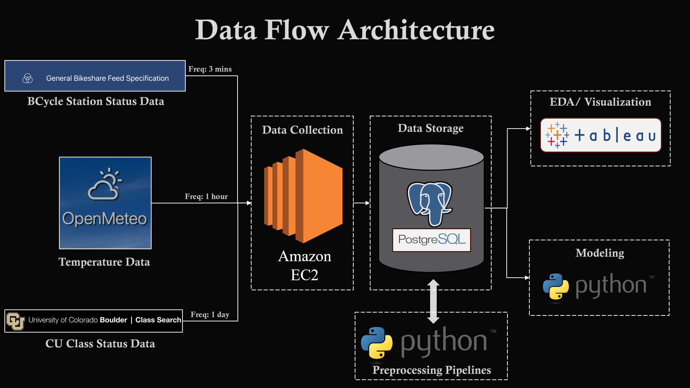
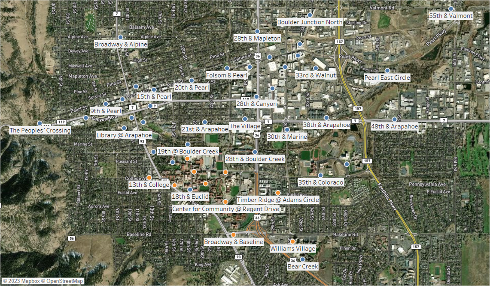
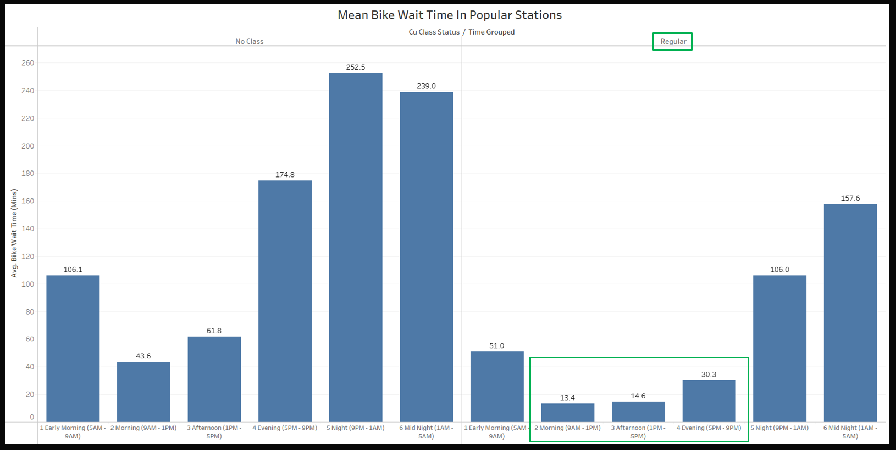
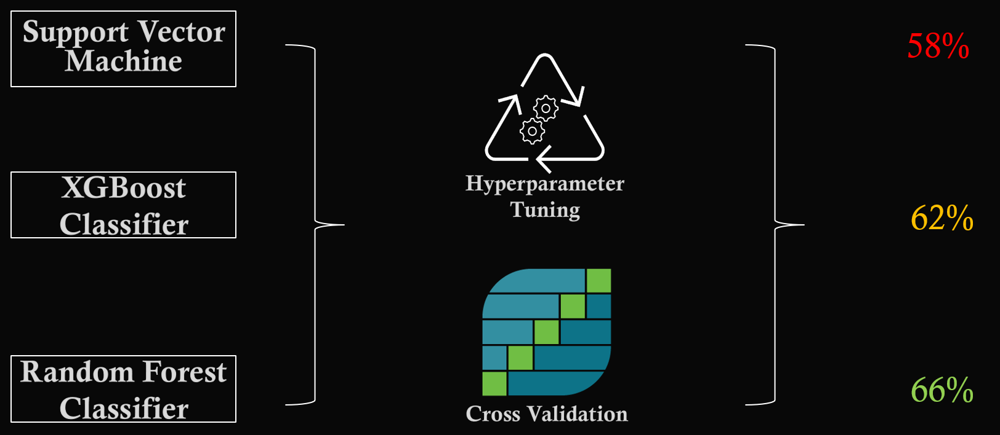
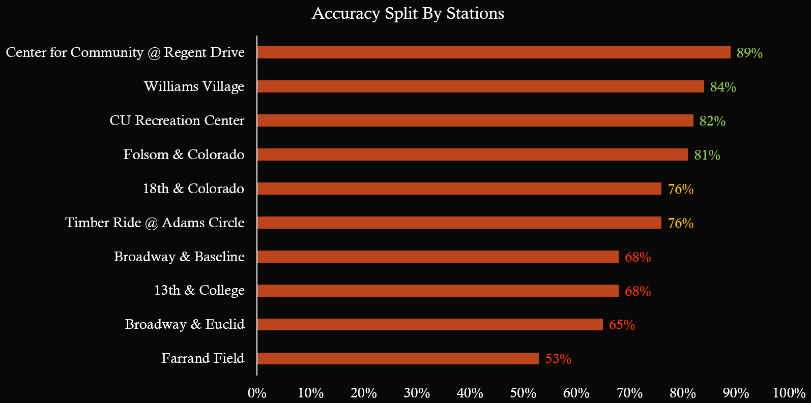

Introduction
Experiment Setup
Data Exploration (EDA)
Modeling & Results
Introduction
Boulder BCycle is a popular and convenient transportation service in Boulder, Colorado. It offers electric bikes stationed throughout the city, providing a sustainable and efficient means of commuting. Notably, the service is tailored to the needs of the community, as it offers a unique benefit to students by providing them with free rides for up to one hour per trip. This student-friendly policy makes it an attractive choice for the University of Colorado Boulder's student population, who frequently utilize Boulder BCycle to commute between their residences and the university. The service plays a key role in the city's transport system, supporting sustainability goals and meeting student needs.
In Boulder's BCycle system, users often encounter reliability issues and struggle to predict bike station availability. Hence in this project is focused on transforming the BCycle experience by dissecting usage patterns and calculating waiting times for each station. By analyzing historical data and real-time inputs, I have provied users with valuable insights, enabling them to make informed decisions about when and where to pick up a bike. This initiative seeks to enhance the overall convenience and efficiency of the service, ultimately making BCycle an even more reliable and accessible mode of transportation for the Boulder community.

1. Data Collection: Relevant data were collected from 3 API sources
- GBFS: GBFS API was used to collect live station status data. A major problem with this data is that Problem with this API is it only provides the current station status but not historical data, the was called frequently and the data was pulling every 3 mins.
- OpenMeteo API: OpenMeteo API was used to collect the historical and current weather information.
- CU Boulder Class Search: CU class calender was extracted to record classes that were scheduled on a particular day.
2. Data Storage: Amazon EC2 was used to run the data collection script without interruptions and the results were stored in a PostGrey SQL server.
3. Data Preprocessing: A python preprocessing pipeline was set-up to implement the following data preprocessing.
- Handle missing values
- Create Synthetic Features
- Normalization
- Label encoding
- Join Tables
4. Analysis & Modeling: The pre-processed data was finally pulled into Tableau for EDA and Visualization, and into an other Python pipeline for Modeling.
Data Exploration
Some of the crucial Exploratory Data Analysis that focuses on decoding the BCycle usage patterns across Boulder has been covered in this section. These insights are later used in building the classification model.
Popular BCycle Stations

Busiest Time of The Day

- Find the Tableau dashboard here.
There are a 54 BCycle stations located in Boulder covering the entire city. However, not every station is frequently used. Since BCycle is popular in Boulder among the students of CU as they get free membership, there are a handful of stations that are frequently used. For our analysis the top 10 busiest stations have been chosen.

BCycle is available for public use around the clock, and it is widely used throughout the day. However, the busiest period of the day across the 10 most popular stations has been focused. The above figure conveys that the wait times have a considerable variance, and the time of the day has a high influence on it. From figure, it is evident that the busiest period occurs between morning to evening, particularly during regular CU classes.
Modeling & Results

The data is imbalanced and has more features to process. Hence, a model that can be robust to fetch temporal patterns from these complex datasets can only provide accurate results. Moreover, with only one month of data in hand completing this classification task is only possible by using Random Forest, XGBoost, or SVM models. On researching. Random Forest classifier yielded a better result than other models.

The best model was also tested for the busiest times of the day and the results were better. Stations with less wait time variance recorded higher accuracy of over with the highest in C4C of 89%.